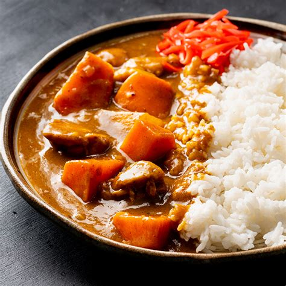

Curry Recipe

Description
This is a basic curry recipe with some special ingredients that I like to use.
Ingredients
- 1 Large Curry block (200-230g)
- (Favorites include S&B curry, Vermont curry, and Golden Curry)
- ~1L Carton of Campbell Pork Ramen Broth
- 1-2lbs of pork - Cut sogigiri (そぎ切り), or cut at an angle.
- 1 Bell Pepper - Cored and cut into squares
- 1 Medium Onion (300-670g) - Cut into wedges, and caramelize.
- 2 Carrots (190g) - Cut rangiri (乱切り), or rotated.
- 4 Cloves of garlic - Grated/minced
- 3 Yukon Gold Potatoes (432g) - Cut into 1.5-2cm cubes.
- 2 Tbsp of a neutral oil
"Secret" Ingredients
(all are added with broth)
- 1 Tbsp honey
- 1 Tbsp Soy sauce
- 1 Tbsp Worcestershire
- 1 Tbsp Butter
- 1 Tbsp Oyster Sauce
- 1 Tbsp Rice Wine Vinegar
- 1 Tbsp of Ketchup
- 1 Tsp of Ground Black Pepper
- Splash of sake
Directions
- Caramelize the onions with about 2 Tbsp of neutral oil under medium low-heat.
- Then fry the garlic in the remaining oil after the onions are caramelized until fragrant.
- Add the pork and cook until you don't see any pink left on the pieces.
- Add the carton of ramen broth to the broth and raise the heat to high to help it boil.
- As you're waiting for the broth to boil, add any appropriate secret ingredients to the broth.
- Add the potatoes, carrots, bell pepper, and other veggies that you make like to the broth
- Once it boils, lower the heat to a simmer and let it sit covered for 15-20 mintues. Until a knife easily pierces a carrot piece.
- Skim any scum and fat that has accumulated onto the surface with a fine mesh strainer.
- Remove from heat add curry blocks to the broth, and stir until they are fully dissolved and absorbed.
- Simmer once again for 5-10 minutes on medium-low heat to help thicken curry, and stir occasionally to prevent ingredients and roux from burning.
- Season with salt and pepper to taste, and serve with rice, noodles, or bread.